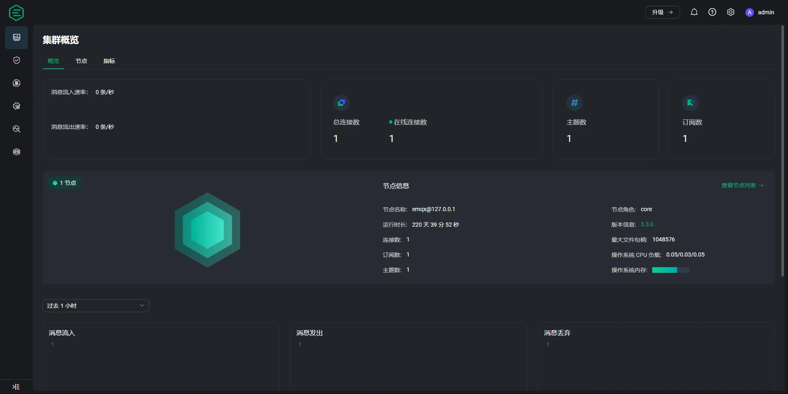
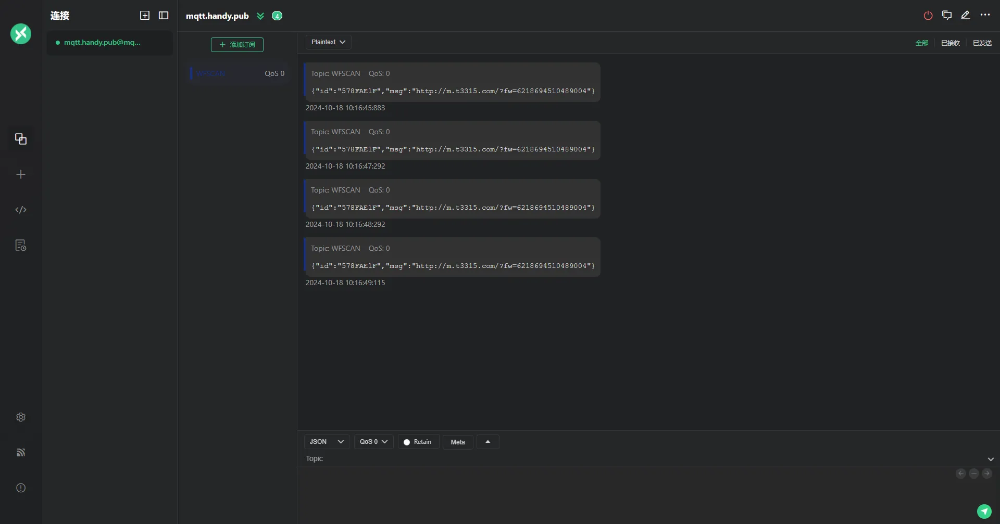

Utiliser le protocole MQTT pour transmettre des données#
Construire un serveur de parrain#
Utilisez un serveur pour construire MQTT Broker, et les codes à barres téléchargés par le scanner sont transférés par ce serveur.
Logiciel de démo#
Version open source EMQX, adresse de téléchargement : EMQX
Services de test#

Note
Informations sur la connexion au serveur
Hôte：mqtt.handy.pub
Port：1883
Username：netum
Mot de passe：netum@2022
Pour une utilisation de test uniquement et strictement interdite pour une utilisation dans les environnements de production.
Configurer le scanner#
Configurer le WiFi et le broker#
Note
Le scanner se connecte au broker MQTT en utilisant le port 1883 par défaut.
Le contenu du sujet souscrit par le scanner est l’ID de l’appareil.
Modifier le port de connexion MQTT#
Modifier le sujet de publication du scanner#
Modifier le sujet de l’abonnement au scanner#
Réception des données#
Utilisez le logiciel client MQTT [MQTTX] pour vous connecter au serveur Courtier et vous abonner au sujet où le scanner publie des messages.

Référence de développement#
[Tutoriel MQTT (https://www.emqx.com/zh/mqtt-guide)